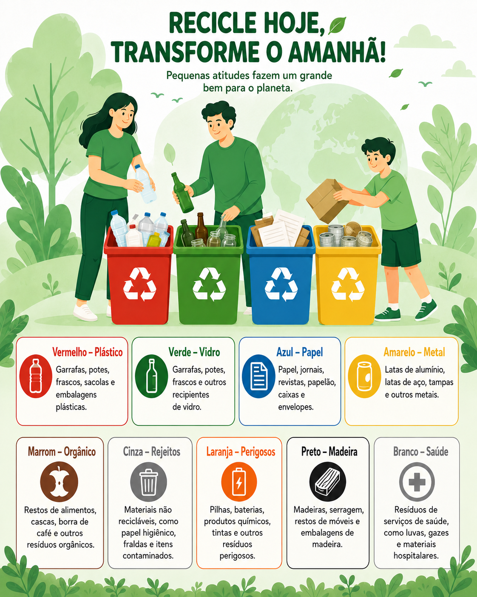

Educação Ambiental
Aprenda sobre reciclagem, descarte correto e práticas sustentáveis.
Guias Educativos
8
conteúdos disponíveisMateriais Recicláveis
5
categorias explicadasDicas Sustentáveis
12
boas práticasConteúdos em destaque
Educação ambientalCarregando orientações de descarte...
Você sabia?

A coleta seletiva utiliza cores para identificar os tipos de resíduos. Separar corretamente os materiais facilita a reciclagem e reduz impactos ambientais.
Dicas rápidas
- Lave e seque embalagens antes do descarte.
- Não misture recicláveis com resíduos orgânicos.
- Vidros quebrados devem ser embalados com cuidado.
- Papéis molhados ou engordurados não devem ir para reciclagem comum.
Curiosidade:
Ver pontos de coleta
Materiais limpos e separados corretamente têm maior chance de voltar para a cadeia produtiva e serem reaproveitados.